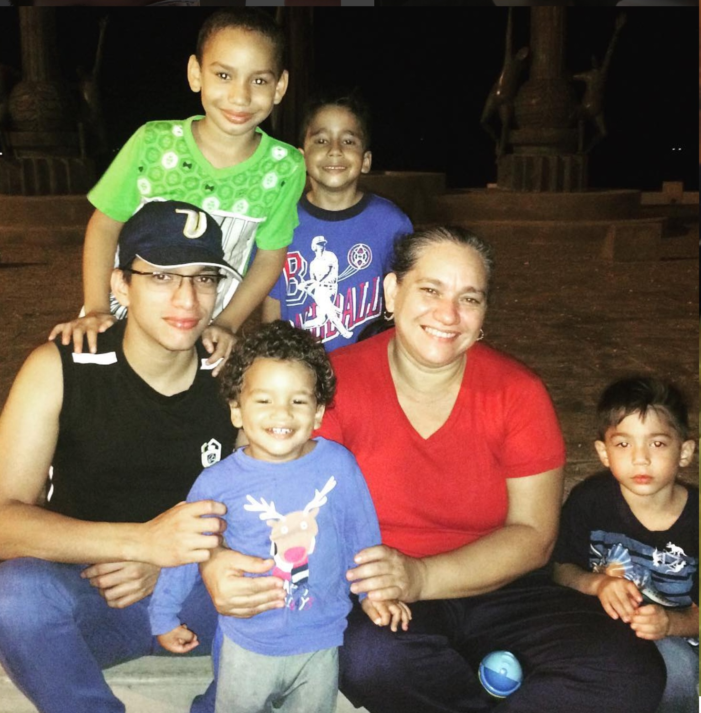

Graduation 2013, Venezuela

With my mother and nephews
Hello everyone, my name is Jorge. I from Venezuela and I came to USA three years ago.
I currently enrolled in computer software development and this is my third quarter. I was an ESL student and I'm still in an English learning process.
The reason why I want to learn software development; Mainly JavaScript, it is because I like the programming language, and I think it is a very important work field, mainly in a city like Seattle.
I like the graphic design and I'd like to learn how create websites, games, and applications.
In my free time I like to play video games, dance Latina music, doing exerciser at GYM, hang out with friends and I like to watch movies and anime.
I am very friendly, a guy who enjoy meet new people.
Graduation 2013, Venezuela
With my mother and nephews